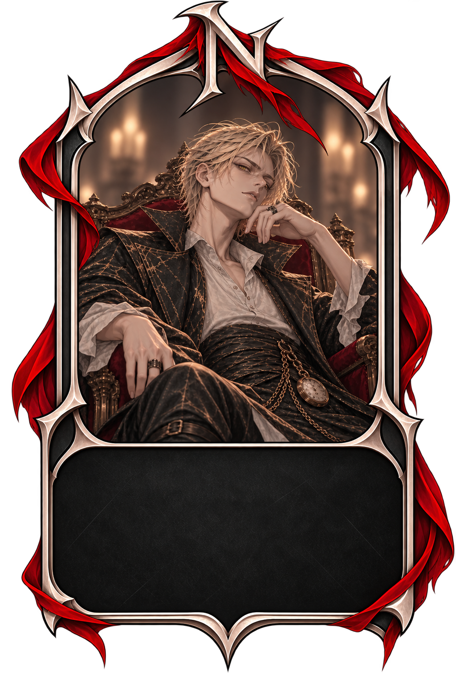
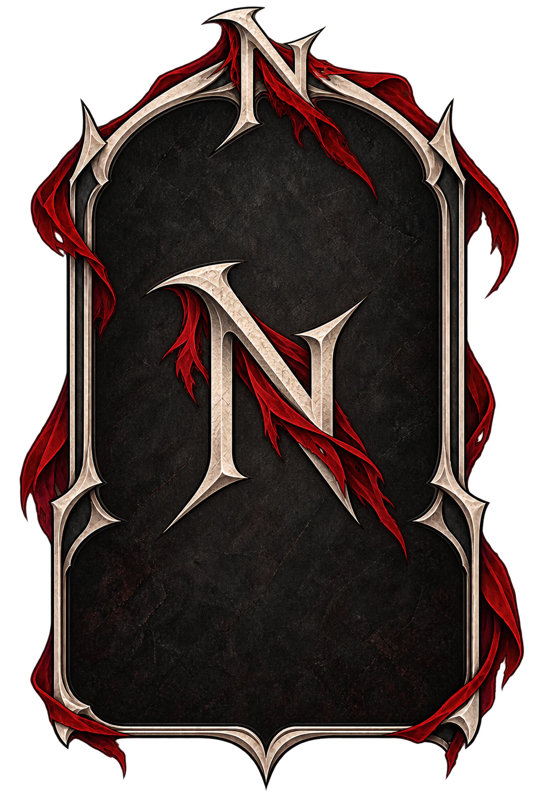

Dalek
Le Dieu du Rêve
Dalek est détenteur de la Veine du Rêve — Rang I, Seigneurs des Rêves, le plus haut degré de maîtrise connu. À ce niveau, le monde onirique lui appartient : il façonne des rêves entiers, plonge plusieurs esprits dans une même vision partagée, et laisse parfois les blessures du songe suivre le dormeur jusqu'à son réveil.
Il y a plusieurs siècles, deux peuples se déchiraient depuis si longtemps que plus personne ne croyait à la fin de leur guerre. Les batailles se succédaient, les terres se ravageaient, et les pertes s'accumulaient — jusqu'aux enfants. Désespérés de voir leur fils mourir au milieu du conflit, les parents de Dalek conclurent un rituel interdit : le Pacte contre Vie d'autrui. En échange de leur propre vie et de celle d'autrui, le pacte plongerait Dalek dans un sommeil dont rien, avant la fin de la guerre, ne pourrait le tirer.
Dalek s'endormit. Pour lui, le temps n'existait plus : son corps reposait, tandis que son esprit s'enfonçait dans un monde entièrement façonné par les rêves, où les années ne s'écoulaient pas comme ailleurs.
300 années passèrent dans le monde réel.
Puis la guerre prit fin. Le peuple de Dalek avait perdu — et ses vainqueurs, épuisés par leur propre victoire, n'avaient rien à célébrer. Le peuple de Dalek, lui, fut presque entièrement exterminé.
C'est alors que Dalek se réveilla, dans un monde qu'il ne reconnaissait plus. Son peuple avait disparu, les terres qu'il connaissait n'existaient plus, et tout ce qu'il avait aimé appartenait désormais à une époque révolue. Mais le Pacte avait laissé sa marque : des siècles passés dans le monde des rêves lui avaient donné le pouvoir d'y entrer, de le manipuler, de le façonner à volonté. Il comprit peu à peu que les rêves n'étaient pas de simples illusions, mais un monde à part entière — un monde dont il pouvait écrire les lois.
Pendant des siècles, il étudia ce pouvoir : créer des mondes oniriques entiers, distordre le temps du rêve, enfermer des esprits, traverser le songe comme on traverse une terre réelle. Sa puissance finit par dépasser les limites d'un simple mortel. Dalek devint une divinité — le Seigneur des Rêves.
Aujourd'hui encore, malgré son ascension, il n'a jamais oublié le monde dans lequel il s'est réveillé : un monde sans son peuple, qui avait continué d'exister 300 ans sans lui. Dalek s'était endormi pour échapper à la guerre. À son réveil, il découvrit que son peuple n'était plus qu'un souvenir.
Le Dormeur des Siècles.
Celui qui s'éveilla sans personne.
Dalek, Seigneur des Rêves.